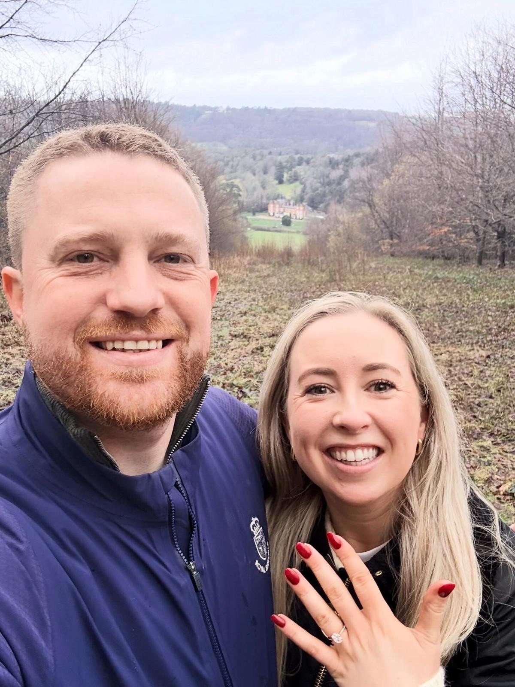
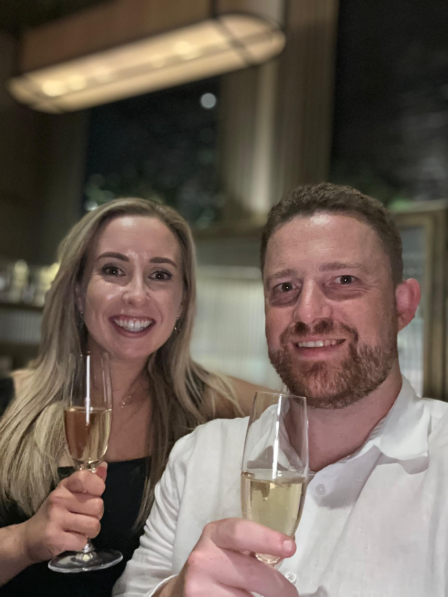
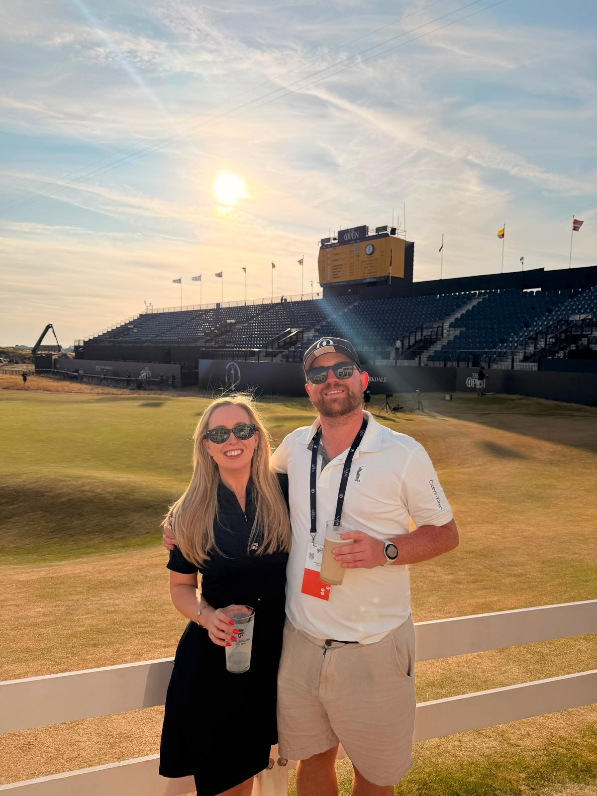

The Ceremony
We will be married at Dawros Church, Dawros, Kenmare. Full timings will follow with the formal invitation.
Parking is available outside the church, or at Dawros Community Centre which is located a short walk away.

The Celebration
After the ceremony we will move to Sheen Falls Lodge, which sits on the banks of the Sheen River just outside Kenmare, for the drinks reception, dinner and dancing.
Sheen Falls Lodge
Kenmare
Co. Kerry, V93 P8V8, Ireland

The Day After
The celebrations carry on the following day at Ring of Kerry Golf Club.
Buses will run from Sheen Falls to take everyone there and back.
A Note on Little Ones
As much as we adore your little ones, we have decided to keep our celebration an adults only occasion. We hope that having plenty of notice makes it easier to plan a well earned night off.